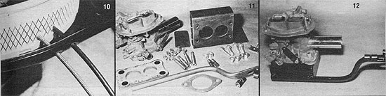

[10] The choke flap cables pass through 3/16"" holes drilled in the filter box and element. [11] The modified carburetor and all the parts necessary to mount it to the engine of your choice. [12] Here's the assembled package, ready to go. A standard radiator hose can be used to connect the Garb's smoke inlet pipe to the wood-gas generator's outlet tube. Note that the gasoline throttle lever is offset from that of the wood gas. We've installed stop arms on the latter control to allow idle position adjustment and prevent the throttle blade from opening beyond a 90? angle. (The apparatus should be compatible with any size engine up to 300 cubic inches.)